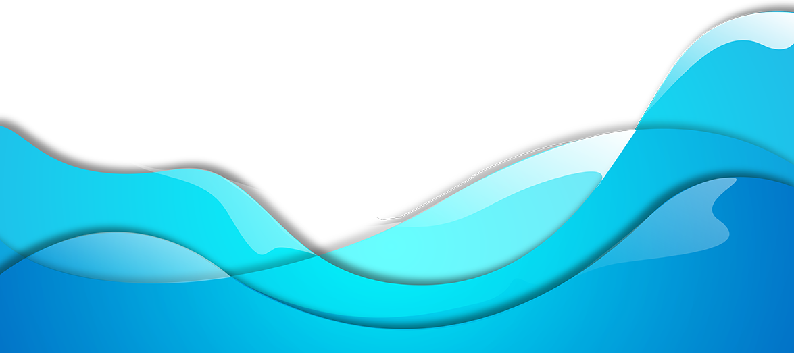

We're your choice for sustainable commercial fishing.
The Kona coast has some of the best fishing in the world. We do our fishing sustainably and with intent on keeping our resources plentiful.
What Sustainable Fishing Means To Us
Sustainable fishing means leaving enough fish in the ocean, respecting habitats and ensuring people who depend on fishing can maintain their livelihoods.
Our Fisheries Standard is a science-based way to measure that sustainability. When fisheries are independently assessed to the standard, three main principles are considered:
Sustainable Fish
Stocks
Are enough fish left in the ocean? Fishing must be at a level that ensures it can continue indefinitely and the fish population can remain productive and healthy.
Minimizing Environmental Impact
What are the impacts? Fishing activity must be managed carefully so that other species and habitats within the ecosystem remain healthy.
Effective Fisheries Management
Are operations well managed? MSC certified fisheries must comply with relevant laws and be able to adapt to changing environmental circumstances.

We're on a mission to end overfishing.
To ensure future generations can enjoy the wild seafood we love by choosing certified sustainable seafood with the blue fish label.